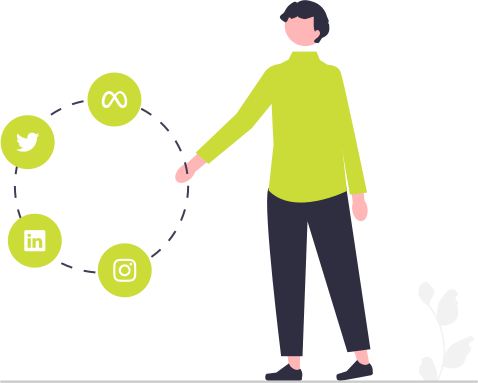

Thème 2 : Les Réseaux Sociaux⚓︎
Les réseaux sociaux sont des applications basées sur les technologies du Web qui offrent un service de mise en relation d’internautes pour ainsi développer des communautés d’intérêts.
Autrement dit, un réseau social, ou média social, est tout simplement un site internet (ou une application mobile) qui consiste et permet aux utilisateurs d’échanger entre eux, de partager des contenus, de découvrir des photos, vidéos, sons, ou de s’informer sur des sujets avec la possibilité de commenter des publications et d'aimer des contenus, etc...
Initialisation⚓︎
Enumération collaborative de réseaux sociaux : Capytale 4c82-2709117
Recherches⚓︎
Pour un réseau social de la liste établie rechercher des données correspondantes aux items suivants :

- En quoi est-ce un réseau social ?
- Domaines d'application, fonctionnalités ;
- historique ;
- pays d'origine ;
- nom des fondateurs ;
- entreprise qu'il le possède ;
- catégorie et nombre d'utilisateurs actuels, popularité ;
- traitement de données privées ;
- principe de recommandation ;
- processus d'engagement ;
- principaux influenceurs ;
- modèle économique ;
- concurrents ;
- critiques, polémiques, ... ;
Compléter ce notebook au format MarkDown pour recueillir les informations trouvées... -->
Ressources⚓︎
Le chapitre concernant les réseaux sociaux sur www.lelivrescolaire.fr ;
Présentation⚓︎
Préparer une présentation orale de votre réseau.
Réaliser un diaporama à partir d'un Jupyter Notebook, ajouter votre voix à cette présentation dans une capture vidéo de moins de 180 secondes puis partager la sur Office365...
Mesure PIX⚓︎
Mesurer vos compétences dans le domaine des réseaux sociaux en suivant le parcours VXXNMS329 sur PIX ;
Relever dans votre notebook de recherches, les notions pour lesquelles vous auriez besoin d'explications complémentaires...
Connaissances associées⚓︎
Graphes et petit monde⚓︎
Illustration
Données :
Alice, Batoul, Clara, Dilan, Éloïse, Fatah, Grégory et Hamza sont dans la même classe.
En dehors des cours, ils se voient régulièrement aux activités suivantes:
- Alice, Batoul, Clara, Dilan et Hamza font du judo ensemble;
- Clara, Dilan et Éloïse se voient au club robotique;
- Grégory et Hamza font partie du même groupe de musique;
- Grégory et Fatah se croisent souvent à la bibliothèque.
Questions :
Sur papier, placer les noms des huit élèves et relier entre eux chaque couple d'élèves qui se voit en dehors des cours.
Quels élèves voient beaucoup d'élèves en dehors des cours ?
...
Lesquels en voient peu ?
...
Pendant les vacances, je veux faire passer une information à ces huit élèves le plus rapidement possible.
A quel élève dois-je m'adresser pour qu'il fasse passer l'information le plus vite possible ?
...
A partir de la vidéo ci-dessous et du www.lelivrescolaire.fr compléter le texte entre les **..........** dans le fichier FlashCards : Graphes et petit monde ;
Illustration (suite)
Pour le graphe exemple d'illustration :
Calculer l’écartement de chacun de ses sommets ;
...
Déterminer son centre, son diamètre et son rayon.
...
Vidéos de ressources complémentaires :⚓︎
Dérives⚓︎
Cyberviolences⚓︎
- Que relate cet article du Monde ?
- Que sont les C.G.U. ?
- Est-ce qu'il existe une législation spécifique (cf. www.lelivrescolaire.fr) ?
Lister d'autres dérives...⚓︎
-
-
-
Bilan⚓︎
Le cours et l'essentiel à savoir...
Modèle économique⚓︎
Commenter le slogan : " Quand c'est gratuit, c'est toi le produit".
FakeNews⚓︎
Etudier les documents suivants